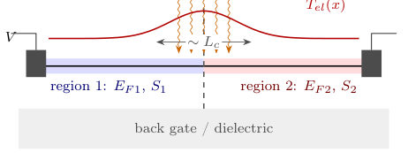

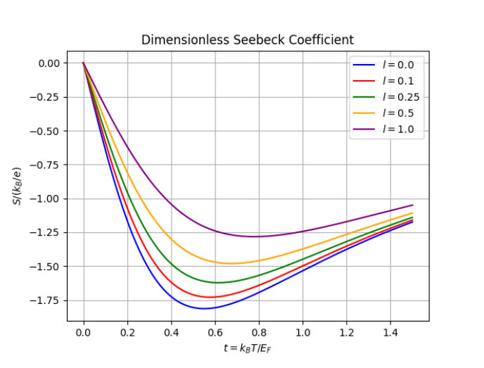

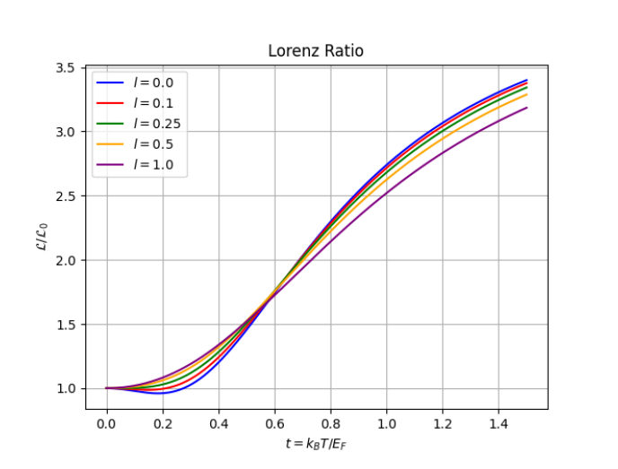
← Index · ← Previous · Next →
Authors: Bin Yan
Type: theory · Category: quantum information and computing · PDF: https://arxiv.org/pdf/2608.15963v1
Analysis basis: full PDF text, analyzed in chunks
Topic relevance: quantum measurements 1/5
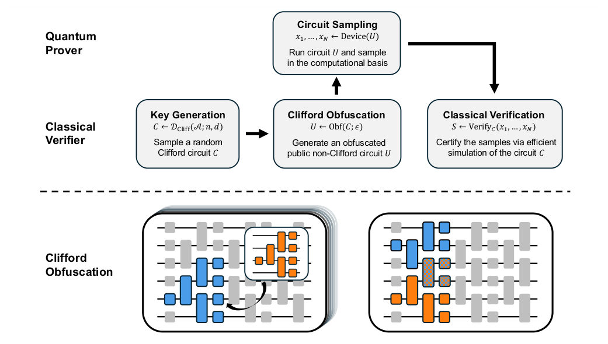
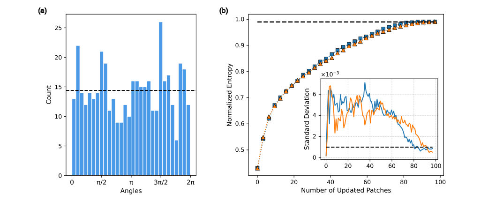
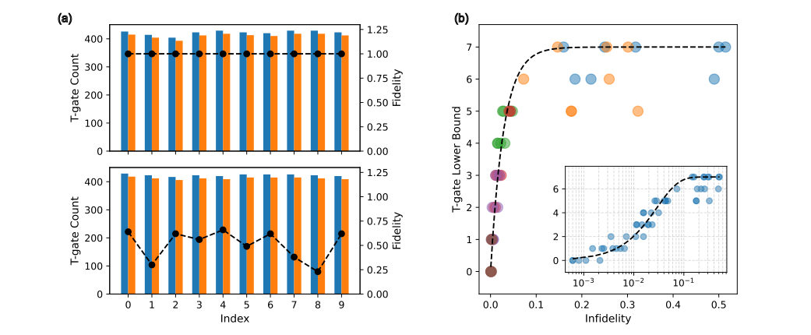
Summary. The paper introduces Clifford circuit obfuscation as a technique to create quantum circuits whose computational advantage can be verified classically. By scrambling the structure using local patch updates, it generates circuits that are hard to simulate but retain an efficient verification key derived from the original Clifford structure. This provides a novel, resource-efficient pathway toward certifying genuine quantum computation.
Why it may be interesting. This work directly addresses the foundational challenge of certifying quantum computational power. For AMO physicists working on open systems or complex dynamics, understanding how to rigorously prove that a system requires quantum resources beyond classical simulation is crucial for benchmarking novel physical platforms (e.g., trapped ions or superconducting circuits).
Main problem. The core problem is developing a method to demonstrate quantum advantage that can be independently verified using only classical computational resources.
Main result. The authors propose a heuristic protocol based on Clifford circuit obfuscation, which generates circuits hard for classical simulation while retaining an efficient classical verification path via a 'Clifford key'.
Method. The method involves compiling a known Clifford unitary into a complex, non-Clifford equivalent circuit by repeatedly updating local, overlapping patches (obfuscation). Verification is achieved by comparing sample distributions against the expected probabilities derived from the original Clifford structure.
Model / system. The system analyzed is quantum circuits acting on $n$ qubits. The protocol starts with a known Clifford unitary and transforms it into an obfuscated unitary, which resists classical simulation attacks like reverse engineering or direct simulation.
Key observables. Key observables include the entropy of parameter distributions (for attack resistance), the T-gate count lower bound ($ u(U)$), and the SSB statistic ($s$) for verification.
Important parameters / regimes. Important parameters include circuit infidelity ($\epsilon$), the depth ($d$), and the size/complexity of the local patches used in the obfuscation process.
Assumptions / limitations. The protocol is heuristic, lacking a formal complexity-theoretic security proof; its hardness relies on conjectures about classical simulation difficulty. Furthermore, fidelity alone is not sufficient to guarantee non-Cliffordness.
Figures summary. Figures illustrate the verification pipeline (Key Generation $ ightarrow$ Obfuscation $ ightarrow$ Sampling $ ightarrow$ Verification). Other figures show parameter histograms and entropy saturation confirming successful randomization against reverse engineering, alongside T-gate count comparisons showing resource inflation.
Paper structure. The paper develops concepts in stages: first establishing the need for classical verification; second, detailing the obfuscation protocol via local patch updates (Algorithm II); third, analyzing security by demonstrating resistance to reverse engineering and direct simulation attacks; and finally, providing rigorous tools like SSB and Unitary Stabilizer Nullity ($ u(U)$) to quantify non-Clifford resources.
Demonstrating quantum advantage in a manner that can be independently verified by classical means remains one of the most pressing open problems in quantum computing. Here we propose a new heuristic approach for constructing quantum circuits that are hard to classically simulate yet whose output distributions can be efficiently verified classically. Our approach is based on Clifford circuit obfuscation. This obfuscation scheme hides the Clifford structure and injects a controlled and rapidly growing non-stabilizer resources that resist known classical attack strategies including reverse engineering and direct simulation. Our protocol is heuristic but is supported by both numerical and theoretical evidence. This work provides a new avenue toward classically verifiable quantum advantage that avoids the stringent implementation requirements of known approaches.
Authors: Ahmed Abuali, Micheal Kahangirwe, Francesco Di Clemente, Vianney E Diaz-Barraza, Jorge A Munoz, Claudia Ratti
Type: theory · Category: statistical mechanics · PDF: https://arxiv.org/pdf/2608.16051v1
Analysis basis: full PDF text, analyzed in chunks
Topic relevance: methods for driven-dissipative 1/5
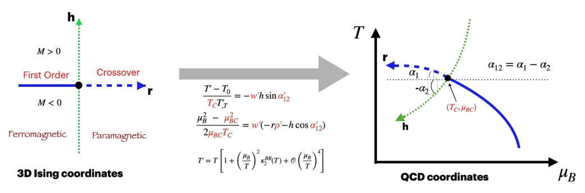
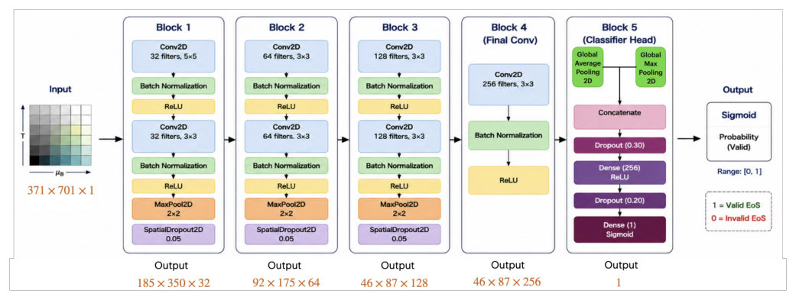
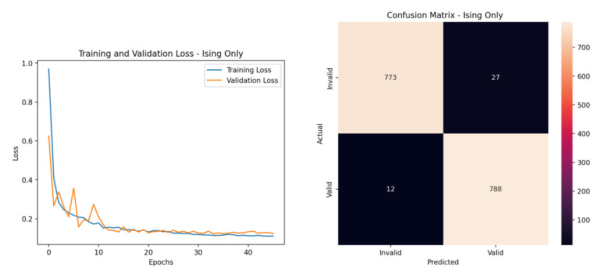
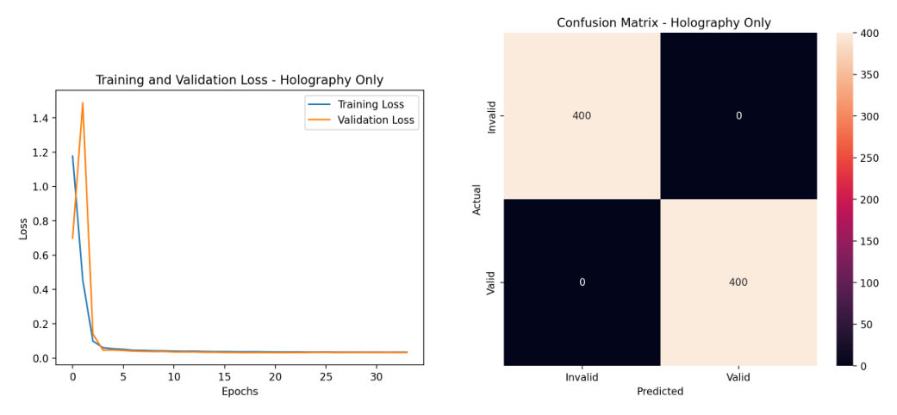
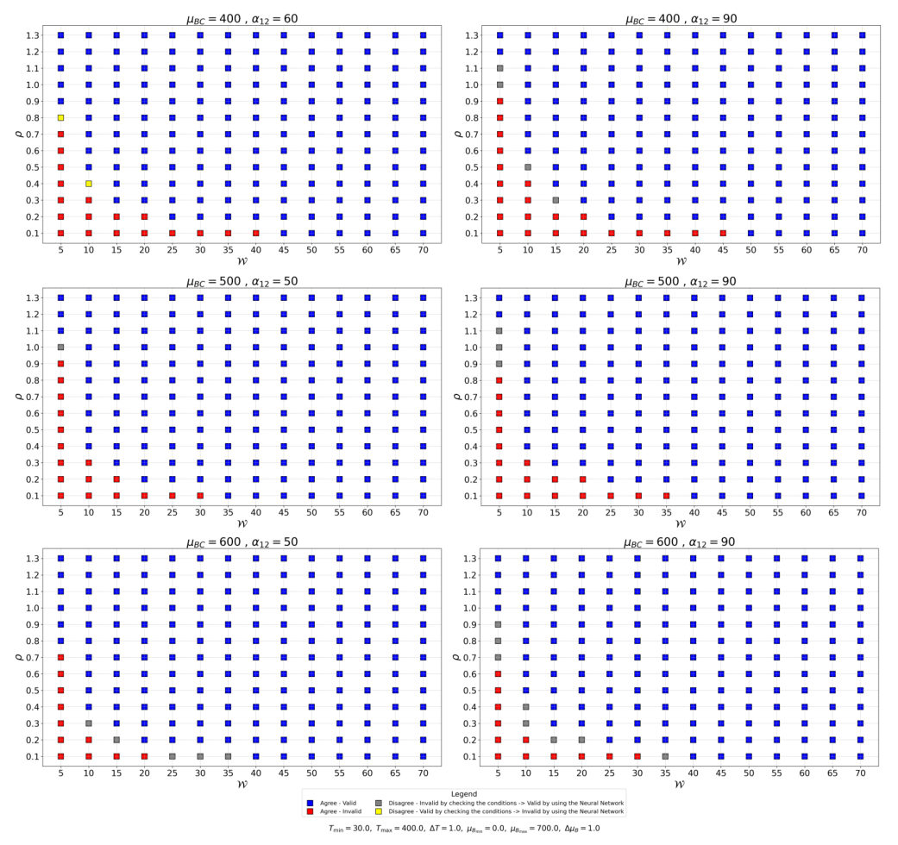
Summary. This work introduces a novel, machine-learning approach using a Convolutional Neural Network (CNN) to rapidly screen the physical admissibility of nuclear matter Equations of State. By training the CNN solely on the normalized pressure surface, the authors demonstrate that geometric signatures of thermodynamic stability and causality violations can be extracted efficiently, offering a fast alternative to traditional, computationally intensive physics checks.
Why it may be interesting. While focused on nuclear physics, the core methodology—using deep learning to extract complex physical constraints from low-dimensional representations of high-dimensional data—is highly relevant for analyzing phase diagrams in any strongly interacting many-body system.
Main problem. Developing an efficient, computationally fast method to classify whether a candidate Equation of State (EoS) for nuclear matter is physically admissible.
Main result. A supervised Convolutional Neural Network (CNN) trained only on the normalized pressure surface ($Q$) can achieve high accuracy in identifying thermodynamic stability and causality violations across different EoS generation frameworks.
Method. The authors developed a CNN that takes the 2D normalized pressure surface, $Q(T, \mu_B) = P(T, \mu_B)/T^4$, as input to classify EoSs. This machine learning approach bypasses the need for expensive direct calculations of higher-order thermodynamic observables.
Model / system. The study concerns the Equation of State (EoS) of nuclear matter at finite temperature ($T$) and baryon chemical potential ($\mu_B$), relevant to dense astrophysical objects like neutron stars. The EoSs are generated using distinct theoretical models, including an Ising-mapping framework and a holographic framework.
Key observables. Thermodynamic stability (requiring $C_V \geq 0$ and $\chi_B^2 \geq 0$) and causality ($0 \leq c_s^2 \leq 1$). The primary input observable is the normalized pressure surface, $Q(T, \mu_B)$.
Important parameters / regimes. Temperature ($T$), Baryon Chemical Potential ($\mu_B$)
Assumptions / limitations. The geometric structure of the normalized pressure surface alone contains sufficient information to diagnose thermodynamic consistency and causality violations.
Figures summary. Not specified in detail, but the notes mention Figure 1 illustrating mappings between Ising model axes and QCD coordinates.
Paper structure. The paper introduces the problem of costly EoS validation, proposes using $Q(T, \mu_B)$ as a sole input feature for a CNN, trains this network on labels derived from rigorous stability/causality checks across multiple frameworks (Ising and holographic), and validates its speed and framework independence.
Thermodynamic stability and causality impose fundamental constraints on the equation of state (EoS) of nuclear matter. Verifying these constraints conventionally requires calculating quantities such as the specific heat, baryon-number susceptibility, and speed of sound, which can become computationally expensive when many candidate EoSs must be examined. We investigate whether the normalized pressure surface, $Q(T,μ_B)=P(T,μ_B)/T^4$, alone contains sufficient information to determine the physical admissibility of an EoS. We develop a supervised convolutional neural network (CNN) that uses only this pressure representation to classify EoSs as physically admissible or inadmissible. The network is provided with training labels obtained from direct thermodynmaic stability and causality check and its does not get any information about the parameters of the underlying EoS framework. For EoSs generated within an Ising-mapping framework, the model achieves $97.65%$ accuracy on unseen test data. Applied independently to EoSs from a distinct holographic framework, it achieves perfect classification of the test set. These results show that pressure surfaces contain geometric signatures of thermodynamic stability and causality violations that can be learned directly by a CNN. Because the classifier relies only on the pressure surface, it avoids evaluating higher-order thermodynamic observables during inference and is largely independent of the EoS-generation framework. When the pressure surface is supplied as a two-dimensional array, the machine-learning validation is approximately 20 times faster than direct validation. Our results establish a fast, framework-independent approach for identifying physically admissible EoSs directly from their pressure surfaces.
Authors: Subhadeep Bandyopadhyay, Rossitza Pentcheva
Type: theory · Category: strongly correlated electrons · PDF: https://arxiv.org/pdf/2608.15765v1
Analysis basis: full PDF text, analyzed in chunks
Topic relevance: Keldysh / 2PI / non-Gaussian methods 1/5
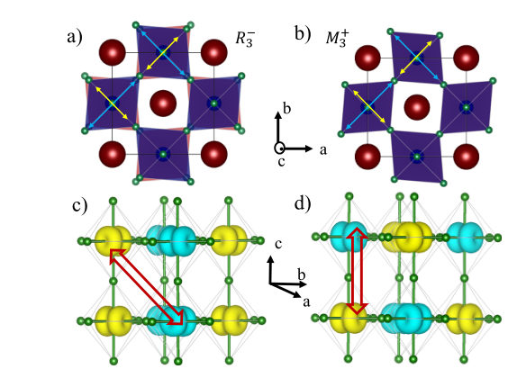
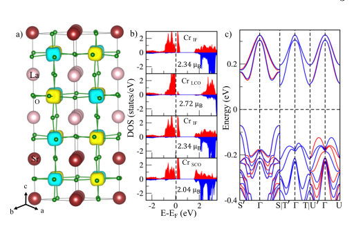
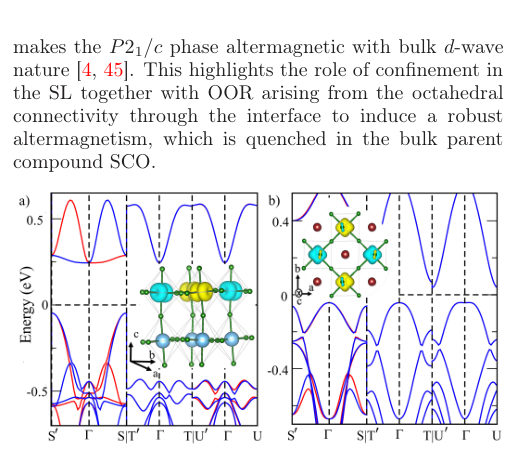
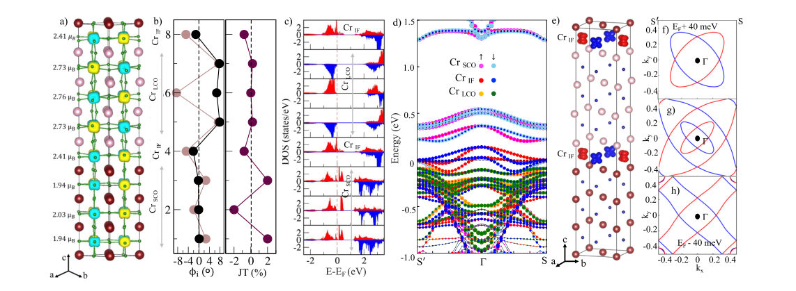
Summary. This theoretical study proposes that oxide superlattices are excellent platforms for realizing metallic altermagnetism. By engineering interfaces between perovskites like $ ext{SrCrO}_3$ and $ ext{LaCrO}_3$, the authors overcome bulk limitations to induce significant spin splitting (NRSS) in the electronic bands. This work guides the design of next-generation materials for quantum transport applications.
Why it may be interesting. This work is highly relevant as it uses advanced electronic structure calculations (DFT+U) on complex correlated oxides to predict functional quantum materials, directly addressing mechanisms for spin-charge coupling crucial in modern spintronics and condensed matter theory.
Main problem. The primary goal is designing materials that exhibit altermagnetism (spin-polarized band splitting in compensated antiferromagnets) while maintaining metallic conductivity for spintronic applications.
Main result. Oxide superlattices, particularly $ ext{(SrCrO}_3 ext{)/(LaCrO}_3 ext{)}_n$, are shown to be promising platforms that can realize robust metallic d-wave altermagnetism by exploiting interface effects and structural distortions.
Method. The study employs Density Functional Theory calculations, specifically incorporating a Hubbard U parameter (DFT+U), to model the electronic structure of these complex oxide superlattices.
Model / system. The research focuses on perovskite oxide superlattices like $ ext{(SrCrO}_3 ext{)/(SrTiO}_3 ext{)}_1(001)$ and $ ext{(SrCrO}_3 ext{)/(LaCrO}_3 ext{)}_n(001)$. These systems are engineered to break symmetry and induce electronic reconstruction at the interfaces.
Key observables. Non-Relativistic Spin Splitting (NRSS) magnitude (up to 350 meV), spin-polarized band structures, spin-split Fermi surfaces (FSs), and metallic character derived from interfacial Cr $d$ bands.
Important parameters / regimes. The Hubbard U parameter ($U$), the number of repeating units ($n$), and structural distortions like octahedral rotations (OORs) are critical parameters explored.
Assumptions / limitations. Bulk $ ext{SrCrO}_3$ is limited by compensating effects, necessitating the use of superlattices to achieve observable altermagnetism. The metallic state relies on interfacial electronic reconstruction driven by polar discontinuity.
Figures summary. Figures illustrate spin-polarized band structures showing the emergence of NRSS in various SLs and schematic representations detailing structural distortions (JT/OORs) associated with different magnetic phases.
Paper structure. The paper first establishes the theoretical challenge—achieving altermagnetism plus metallicity. It then analyzes specific superlattice designs, comparing bulk behavior to confined systems ($ ext{SrTiO}_3$ and $ ext{LaCrO}_3$ interfaces), detailing how structural/polar discontinuities enable large NRSS values.
The discovery of altermagnetism has initiated intensive research and opened new avenues for spin- tronic and transport applications. While current efforts are mostly focused on bulk materials which are typically insulating, here we propose design strategies to achieve a combination of altermag- netism and metallicity in oxide superlattices by exploiting symmetry breaking, electrostatic doping and confinement. While bulk SrCrO3 does not exhibit altermagnetism due to compensating effects between adjacent layers our density functional theory calculations with a Hubbard U parameter re- veal, that a single SrCrO3 layer confined in a (SrCrO3)1/(SrTiO3)1(001) superlattice (SL) exhibits a sizable non-relativistic spin splitting (NRSS) up to 350 meV with bulk d-wave nature due to the coexistence of orbital ordering and octahedral rotations (OORs). Since this system is insulating, we extend to SrCrO3/LaCrO3(001) SLs. In the (SrCrO3)4/(LaCrO3)4(001) SL the combination of a polar discontinuity at the interface and stronger OORs promotes metallic d-wave altermagnetism. The NRSS of up to 120 meV is contributed by the interfacial Cr d bands at the Fermi level with indications for a spin-selective Fermi surface nesting. These findings establish oxide superlattices as a promising platform to realize and explore altermagnetism for quantum transport and spintronic functionalities
Authors: Omer S. Sella, Robert Pinsler, Thomas Heinis
Type: theory · Category: quantum information and computing · PDF: https://arxiv.org/pdf/2608.15754v1
Analysis basis: full PDF text, analyzed in chunks
Topic relevance: quantum measurements 1/5
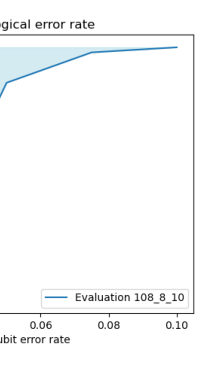
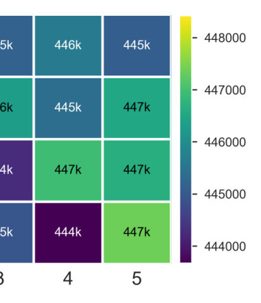
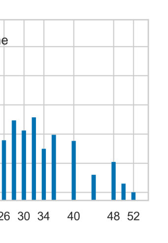
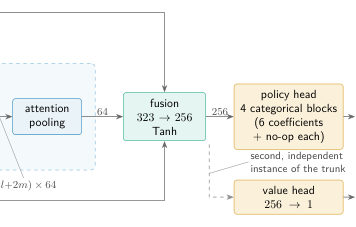
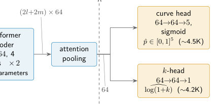
Summary. This paper introduces an advanced RL approach to solve the co-design problem in Quantum Error Correction. By framing code generation as a Markov Decision Process, the authors train an agent using PPO to select optimal Bivariate Bicycle codes that maximize decoder performance against noise. This methodology advances the field by linking theoretical code construction directly to practical hardware limitations.
Why it may be interesting. This work provides a machine learning-driven methodology for optimizing quantum hardware components (codes) based on the performance of classical processing units (decoders), which is crucial for building fault-tolerant quantum computers.
Main problem. The core problem is the co-design of Quantum Error Correcting Codes (QECCs) and their associated decoders to maximize performance against physical noise.
Main result. The authors demonstrate a framework using Reinforcement Learning (RL) to generate Bivariate Bicycle (BB) codes optimized specifically for a given decoder architecture under depolarizing channel noise.
Method. They employ Proximal Policy Optimisation (PPO) within a Markov Decision Process (MDP) framework, where actions modify the polynomial coefficients defining the code's parity check matrices.
Model / system. The system is quantum error correction on $n$ qubits subject to Pauli noise. Codes are represented by stabilizer sets derived from parity check matrices ($H_X, H_Z$), and performance is evaluated via Monte-Carlo simulation of logical error rates.
Key observables. Decoder performance (physical-to-logical error rate), the reward function based on the area under the physical-error-rate curve, and the number of logical qubits ($k$).
Important parameters / regimes. Code parameters defined by polynomials $a(x), b(x), a(y), b(y)$; noise model is depolarizing channel noise.
Assumptions / limitations. The current work fixes the decoder architecture while optimizing the code; it does not fully address engineering pairs based on detailed quantum device knowledge, and the reward function can be sensitive to integration limits.
Figures summary. Figure 1 illustrates the physical-to-logical error rate curve used for calculating the RL reward. Other figures show coefficient heatmaps and distributions of logical qubits ($k$) across generated codes.
Paper structure. The paper introduces the problem, details the mathematical framework (BB codes via polynomials), establishes the MDP formulation (State=matrices, Action=coefficient flip, Reward=performance integral), and applies PPO to train an agent to find optimal code parameters.
We present a reinforcement learning (RL) approach to the co-design of stabilizer sets of Quantum Error Correcting Codes (QECCs) and decoders. We show how to produce a generative model that produces Bivariate Bicycle (BB) codes based on the choice of decoder. Specifically, we fix a decoder architecture and use Proximal Policy Optimisation (PPO) to train an agent over BB codes to maximise decoder performance under a depolarising channel noise model.
Authors: Luis Daniel Villa Cortes, S. R. Valluri, Atul Jhalani, Ajay Soni, P. C. Deshmukh
Type: theory · Category: statistical mechanics · PDF: https://arxiv.org/pdf/2608.14850v1
Analysis basis: full PDF text, analyzed in chunks
Topic relevance: Keldysh / 2PI / non-Gaussian methods 1/5



Summary. This paper presents an advanced theoretical method to calculate thermoelectric transport coefficients in graphene by extending the Mott formula using a zeta-function series. This approach yields exact, closed-form results beyond the usual low-temperature approximations, providing critical insights into how temperature and disorder affect device performance.
Why it may be interesting. While focused on condensed matter thermodynamics, the mathematical technique of resumming infinite series into exact closed forms via special functions (zeta functions) is highly relevant for theoretical physics dealing with non-perturbative quantum field theories or many-body systems where standard approximations fail.
Main problem. To develop an exact, all-orders extension of the Mott formula for thermoelectric transport coefficients ($ ext{Seebeck}$ coefficient, $ ext{ZT}$) that remains accurate even when temperature is not much smaller than the Fermi energy.
Main result. The authors derive closed-form expressions for key transport parameters using a zeta-function series approach, showing that the Seebeck coefficient reaches a maximum and the Wiedemann-Franz law can be violated at higher temperatures in graphene.
Method. The core method involves expanding conductivity integrals using a generalized Sommerfeld-type expansion, which becomes exact when the underlying material function is polynomial, allowing for summation into closed-form zeta-function expressions.
Model / system. The study focuses on thermoelectric transport in graphene photothermoelectric devices. The theoretical framework models carrier transport using a quadratic conductivity model and incorporates corrections for radiative heat transfer.
Key observables. Seebeck coefficient ($S$), Lorenz ratio, electronic figure of merit ($ ext{ZT}$), electrical conductivity ($\sigma$), and thermal conductivity ($\kappa$).
Important parameters / regimes. Temperature ($T$) relative to Fermi energy ($\mu$), disorder strength, and the radiative heat transport correction factor ($\kappa_{rad}/\kappa_0$).
Assumptions / limitations. The derivation relies on the assumption that the underlying transport function $G(E)$ is a polynomial in energy for the series to terminate exactly; it also assumes independent carriers in the relaxation-time picture.
Figures summary. Not specified, but the analysis involves deriving closed-form expressions and showing how $ ext{ZT}$ is corrected by radiative heat transport ($\kappa_{rad}/\kappa_0$).
Paper structure. The paper first establishes the limitations of standard Mott theory, then develops the all-orders zeta-function series for transport coefficients, applies this to graphene using a quadratic model, and finally discusses corrections from radiative heat transfer to determine the final $ ext{ZT}$ bounds.
The standard Mott formula is widely used to describe thermoelectric transport, but it becomes less accurate when the temperature is not much smaller than the Fermi energy. In this work, we develop an all-orders extension of the Mott approach using a series of Riemann zeta functions. We show that when the transport function is a polynomial, the series ends after a finite number of terms, giving exact results within the model. We apply this method to graphene photothermoelectric devices using a quadratic conductivity model. The results provide closed-form expressions for the Seebeck coefficient, Lorenz ratio, and electronic figure of merit. The analysis shows that the Seebeck coefficient reaches a maximum instead of increasing indefinitely, while the Wiedemann-Franz law can be significantly violated at higher temperatures. We also find that disorder reduces the thermoelectric performance and that the electronic figure of merit has an upper limit in the clean graphene model. Finally, we discuss the effect of radiative heat transport on the figure of merit. These results provide a simple analytical way to study graphene thermoelectric transport beyond the usual low-temperature Mott approximation.
Authors: Ángela Capel, Pablo Costa Rico
Type: theory · Category: quantum information and computing · PDF: https://arxiv.org/pdf/2608.15833v1
Analysis basis: full PDF text, analyzed in chunks
Topic relevance: quantum measurements 1/5
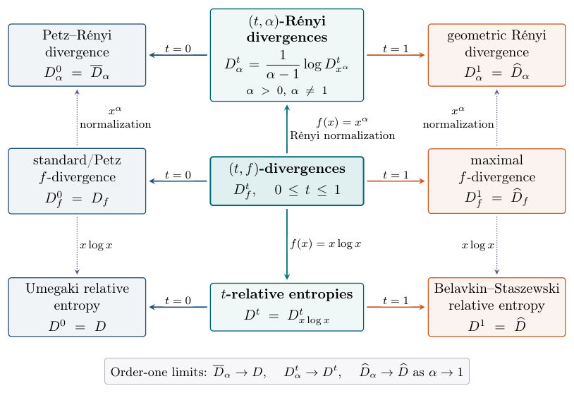
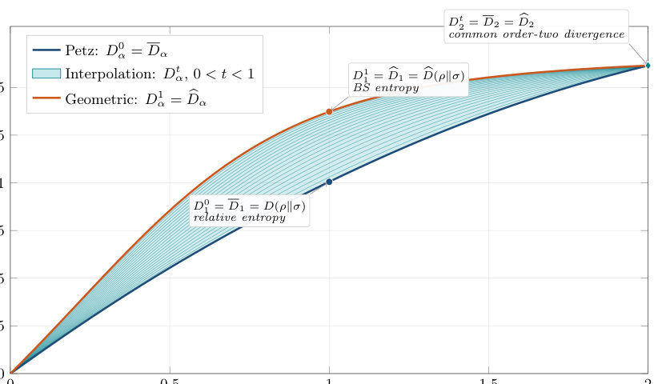
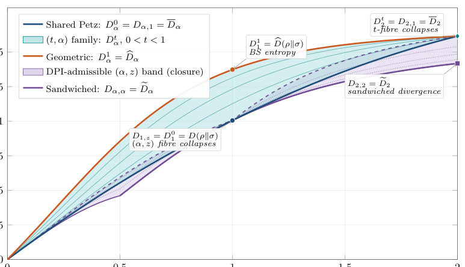
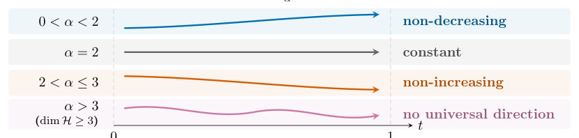
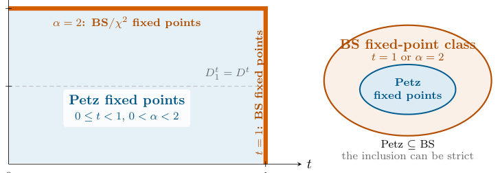
Summary. The paper develops the concept of geodesic quantum f-divergences by interpolating between standard and maximal relative modular operators. It proves key properties like data processing inequalities (DPI) across this entire family of divergences. This work unifies several important measures in quantum information theory, providing deep insights into how information quantities behave under physical operations.
Why it may be interesting. This work provides a unified mathematical structure (the geodesic) to study how various fundamental measures of distinguishability and information flow behave as they interpolate between known limits, which is crucial for understanding physical processes in open quantum systems.
Main problem. The paper introduces and analyzes geodesic quantum f-divergences, $D_f^t$, which generalize classical f-divergences to the noncommuting setting of quantum states.
Main result. It establishes data processing inequalities (DPI) for these divergences and characterizes the equality conditions, showing a transition in the required sufficiency class at the parameter $t=1$.
Method. The analysis uses the affine-invariant geodesic approach between standard and maximal relative modular operators to construct the divergence family.
Model / system. The framework applies to quantum states ($ ho$, $\sigma$) and involves interpolating between known quantum divergences like Umegaki, Belavkin-Staszewski (BS), Petz, and Rényi entropies.
Key observables. Geodesic quantum $f$-divergences ($D_t^f$), relative entropies, conditional mutual information, and various generalized entropy measures.
Important parameters / regimes. The interpolation parameter $t \in [0, 1]$ controls the specific divergence used; the generator function $f$ determines the family type.
Assumptions / limitations. Results are primarily derived for invertible quantum states, though extensions to non-invertible cases are discussed. The analysis relies on assuming operator-convex generators $f$.
Figures summary. Figure 1 is mentioned as illustrating how different divergences interpolate between endpoints (Petz and geometric Rényi).
Paper structure. The paper proceeds by defining the geodesic divergence, proving its data processing properties for all $t$, identifying the conditions for equality in DPI, and finally analyzing the collapse of quantum Markov chains at different values of $t$.
We introduce the geodesic quantum $f$-divergences $D_f^t$, $0\leq t\leq1$, obtained from the affine-invariant geodesic between the standard and maximal relative modular operators. They reduce to the classical $f$-divergence for commuting states. The logarithmic generator yields geodesic relative entropies joining the Umegaki and Belavkin-Staszewski entropies, while the power generators yield $(t,α)$-Rényi divergences joining the Petz and geometric families. Our first main result is data processing of $D_f^t$ for every finite operator-convex generator $f$ and every $t\in[0,1]$. In particular, this gives DPI for the geodesic relative entropies and for the $(t,α)$-Rényi divergences when $0<α<1$ or $1<α\leq2$. Our second main result identifies equality in the DPI: for invertible states, every equality-determining operator-convex generator has, at each nonmaximal parameter $0\leq t<1$, exactly the Petz sufficiency class; at $t=1$, this changes to the generally larger maximal, or BS, class, which also coincides with the equality class of the divergences associated with the quadratic generator for every $t$. Our third main result is the corresponding collapse of invertible geodesic quantum Markov chains: for each of the three ordered conditional-mutual-information constructions, the $t$-quantum Markov chains are precisely the quantum Markov chains for $0\leq t<1$, whereas at $t=1$ they are the invertible BS quantum Markov chains, a class that can be strictly larger. We also determine parameter-monotonicity regimes and the intersections with the $(α,z)$ family. We prove strengthened data-processing and reconstruction estimates; we compare the three conditional orientations; we establish continuity bounds under positive lower-eigenvalue assumptions together with complementary discontinuity results; and we give a capacity-per-unit-cost interpretation.
Authors: Ángela Capel, Pablo Costa Rico
Type: theory · Category: quantum information and computing · PDF: https://arxiv.org/pdf/2608.15916v1
Analysis basis: full PDF text, analyzed in chunks
Topic relevance: quantum measurements 1/5
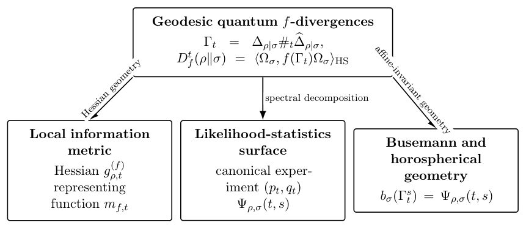
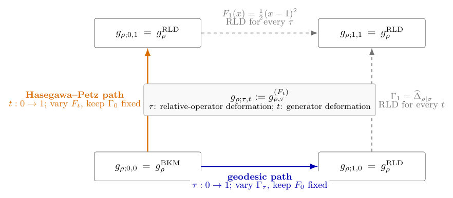
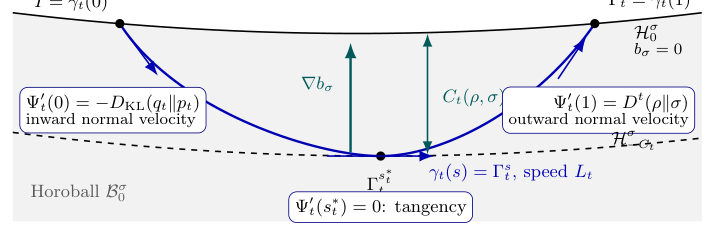
Summary. This work develops a comprehensive geometric framework by analyzing geodesic quantum f-divergences. It derives an explicit metric tensor for these divergences and shows that the structure can be mapped onto classical statistical concepts like log-likelihood cumulants. This provides a unified, geometrically rich understanding of quantum distinguishability.
Why it may be interesting. The rigorous geometric treatment of quantum divergences provides powerful tools for quantifying distinguishability between quantum states, which is fundamental in quantum estimation theory and resource theories.
Main problem. The paper investigates the differential, statistical, and geometrical consequences arising from geodesic quantum f-divergences.
Main result. It derives an explicit formula for the induced monotone quantum information metric $g_{ρ,t}^{(f)}$ and establishes a geometric framework using Busemann functions in the cone of positive operators.
Method. The authors compute the Hessian of the generalized divergence along geodesics parameterized by $t$, utilizing techniques from Riemannian geometry and functional analysis on operator convex functions.
Model / system. The study concerns quantum states $ ho$ and $\sigma$ (represented as positive self-adjoint operators) in a finite-dimensional Hilbert space, focusing on the interpolation of relative modular operators along geodesics.
Key observables. Geodesic quantum $f$-divergences ($D_t f( ho\|\sigma)$), the induced metric tensor $g(f)_{ ho,t}$, and the log-likelihood cumulant function $\Psi_{ ho,\sigma}(t, s)$.
Important parameters / regimes. The interpolation parameter $t \in [0, 1]$, the operator convex function $f$, and the states $ ho$ and $\sigma$.
Assumptions / limitations. The primary assumptions include that the state $ ho$ is invertible and that the function $f$ is operator-convex.
Figures summary. Figure 1 summarizes three applications: the local metric calculation, likelihood statistics derived from the divergence, and the resulting Busemann geometry in the positive cone.
Paper structure. The paper proceeds by first defining the geodesic quantum f-divergences, then calculating the Hessian to find the monotone metric (Section 2), relating this structure to canonical binary experiments via log-likelihood cumulants (Section 3), and finally endowing the entire statistical framework with a global geometry using Busemann functions (Section 4).
We study the differential, statistical, and geometrical consequences generated by the geodesic quantum $f$-divergences introduced in [14], which are constructed by interpolating the relative modular operator and the commutant Radon-Nikodym derivative using a geodesic with parameter $t\in [0,1]$. For an invertible state $ρ$ and an operator convex function $f$, we compute the Hessian and obtain an explicit formula for the induced monotone quantum information metric $g_{ρ,t}^{(f)}$. Furthermore, we also compare these metrics with the Petz-Hasegawa metric and find the meaning of the interpolation parameter $t$ in this new geometry. We next show that the interpolation of relative modular operators $Γ_t$ in the reference purification of a state $σ$ defines a canonical finite binary experiment $(p_t,q_t)$, and introduce a log-likelihood cumulant function $Ψ_{ρ,σ}(t,s)$, recovering the Nussbaum-Szkoła distributions at $t=0$ and the Matsumoto construction at $t=1$. Finally, using Busemann functions, we endow this statistical framework with a geometric meaning in the cone of positive operators.
Authors: Changwon Lee, Tak Hur, Jeongwoo Jae, Daniel K. Park
Type: theory · Category: quantum information and computing · PDF: https://arxiv.org/pdf/2608.15760v1
Analysis basis: full PDF text, analyzed in chunks
Topic relevance: quantum measurements 1/5
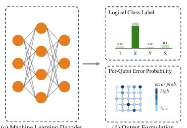
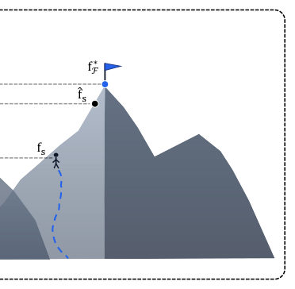
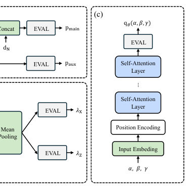
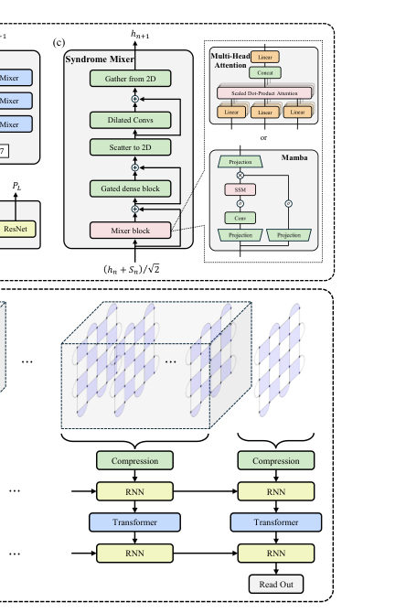
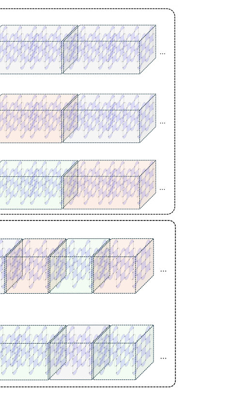
Summary. This survey reviews how Machine Learning can be applied to decode errors in topological quantum codes. It frames QEC decoding as a data inference problem, surveying various ML architectures and paradigms suitable for processing complex syndrome histories. The paper argues that ML offers a path toward achieving the high accuracy required for fault-tolerant quantum computation while maintaining practical speed.
Why it may be interesting. This work directly addresses the computational bottleneck in fault-tolerant quantum computing by proposing advanced AI methods to solve an NP-hard decoding problem, which is crucial for any physicist working on scalable quantum hardware.
Main problem. The core challenge is developing scalable, accurate, and real-time decoding algorithms for Quantum Error Correction (QEC) codes.
Main result. Machine learning approaches, including various neural network architectures, are presented as a powerful framework to approximate the theoretically optimal but intractable quantum maximum-likelihood decoding.
Method. The paper frames decoding as an inference problem over classical syndrome history and surveys ML paradigms (discriminative, generative, RL) applied to this task.
Model / system. The focus is on topological quantum codes, such as the surface code, which are used to encode logical information nonlocally across many physical qubits for fault-tolerant computation.
Key observables. Logical error class, recovery operation, and probability distributions over possible errors derived from syndrome measurements.
Important parameters / regimes. Code distance, physical error rate ($p$), computational latency (real-time constraints).
Assumptions / limitations. The primary assumption is that ML can effectively model the complex spatiotemporal correlations inherent in quantum error syndromes to achieve near-optimal decoding performance.
Figures summary. Figure 1 illustrates the overall ML-based decoding pipeline from syndrome extraction to final output. Figure 2 details the theoretical decomposition of decoding risk into approximation, generalization, and optimization errors.
Paper structure. The chapter is structured by first framing decoding as a learning problem, then detailing key ML paradigms (discriminative, generative, RL), reviewing necessary neural network building blocks (GNNs, Transformers), presenting benchmarks, and concluding with real-time considerations and open challenges.
Decoding is an essential component of quantum error correction (QEC), translating stabilizer measurement outcomes into corrective actions that suppress logical errors and preserve logical quantum information. Building fault-tolerant architectures requires increasing the code distance, which in turn places growing demands on decoding accuracy, scalability, and practical deployability. While a wide range of decoding algorithms have been proposed and demonstrated, achieving reliable, scalable, and real-time decoding remains a significant challenge. Machine-learning (ML) approaches are particularly well suited to this setting, as quantum error decoding is fundamentally a problem of processing large volumes of classical data with complex spatiotemporal correlations. This chapter surveys ML-based methods for quantum error decoding, with a focus on topological codes and an emphasis on architectural principles, practical performance, and real-time considerations. We first frame decoding as a learning problem and outline key paradigms, including discriminative, generative, and reinforcement-learning formulations. We then introduce the neural network building blocks that underpin most contemporary neural decoders and discuss how these components can be integrated to balance expressivity, scalability, and latency. Building on this architectural perspective, we review recent progress and benchmarks in neural decoding for memory experiments, and discuss real-time decoding, open challenges, and future directions toward scalable fault-tolerant quantum computing.
Authors: Nicolas Fabre
Type: theory · Category: quantum information and computing · PDF: https://arxiv.org/pdf/2608.15237v1
Analysis basis: full PDF text, analyzed in chunks
Topic relevance: quantum measurements 1/5
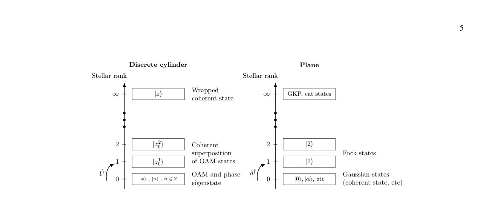
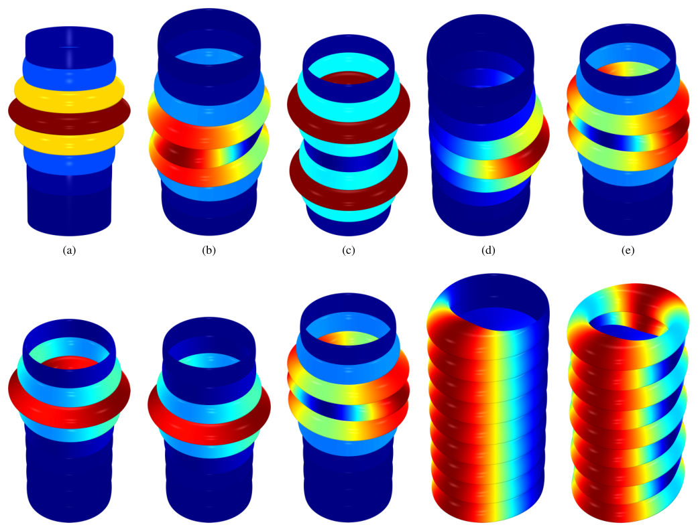
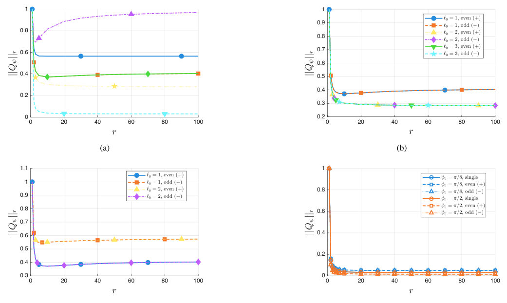
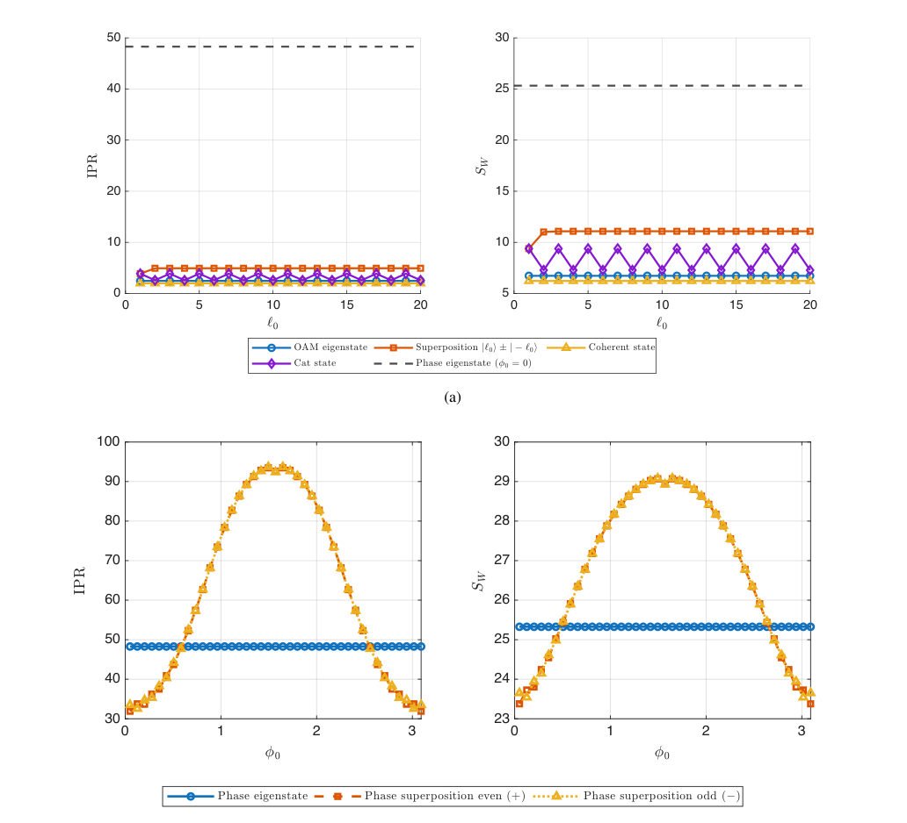
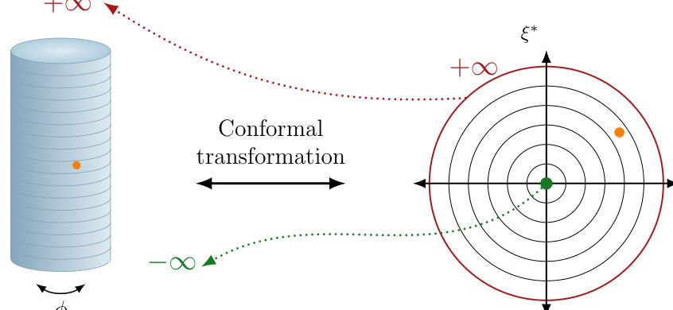
Summary. This paper develops a novel 'number-of-zeros' hierarchy for quantum states on the discrete cylinder phase space, linking it to physical systems like Josephson junctions. The main finding is that while this zero-counting property characterizes non-classicality, it does not necessarily correlate with how localized the state is in terms of standard measures like IPR or Wehrl entropy.
Why it may be interesting. It provides a deep geometric insight into non-classicality (zero count) versus spatial confinement (localization), suggesting that these two key quantum features can decouple in specific phase spaces, which has implications for quantum state characterization.
Main problem. To establish a number-of-zeros hierarchy for quantum states on the discrete cylinder phase space and determine if this zero-counting property governs state localization.
Main result. The zero-counting hierarchy is established, showing that the wrapped coherent state has infinitely many zeros. Crucially, this zero-counting hierarchy does not track state localization measures like IPR or Wehrl entropy.
Method. The authors analyze the stellar representation of quantum states using Majorana methods and define a number-of-zeros count based on the Husimi Q-function zeroes. They compare this to standard localization diagnostics ($\mathcal{L}_r$ norm, IPR).
Model / system. The system is modeled by the discrete cylinder phase space, which is mathematically equivalent to an infinite strip of the complex plane. It is relevant for describing twisted photons and Josephson junctions.
Key observables. Number of zeros in the stellar distribution; $\mathcal{L}_r$ norm, Inverse Participation Ratio (IPR), and Wehrl entropy measuring state spread.
Important parameters / regimes. The structure depends on operators like $\hat{E} = e^{i\hat{\phi}}$ and the specific choice of coherent states (e.g., wrapped coherent state).
Assumptions / limitations. The analysis relies on mapping quantum states to a stellar distribution function $F_\psi(z)$ whose zeroes are tracked.
Figures summary. Not specified, but the notes mention establishing a 'stellar rank hierarchy' (Fig. 1) comparing different state types.
Paper structure. The paper first builds the zero-counting hierarchy on the discrete cylinder phase space, contrasting it with continuous variable systems. It then investigates whether this algebraic structure governs physical properties like localization using multiple entropy and norm measures.
The discrete cylinder phase space offers a natural setting for twisted photons, Josephson junctions, and certain bosonic codes. In that context, we build a number-of-zeros hierarchy for the stellar distribution of states on the discrete cylinder phase space, tied to usefulness for quantum computation. The orbital angular momentum (OAM) and phase eigenstate, having no zeros, sits at the bottom of the hierarchy and share mathematical properties with the coherent state on the plane phase space, both sharing zero rank and a positive Wigner distribution. This reveals a structural peculiarity of the cylinder: its coherent state---the wrapped coherent state---is instead the most quantum, carrying infinitely many zeros, so "coherent state" need not signal classicality across different phase-space geometries. We identify the operations that preserve or change the zero count, giving explicit access to every rank of the hierarchy. We then ask whether this hierarchy also governs localization. Using the $L^r$ norm, the inverse participation ratio, and the Wehrl entropy as complementary measures of spread in the Husimi density, we find that the two hierarchies need not track one another: the wrapped coherent state can be more localized than the OAM eigenstate even though it carries infinitely many zeros.
Authors: Konstantin Lamp, Alejandro D. Somoza, Elias Walter, Marina Walt, Michael Marthaler, Maria Fernanda Juarez, Birger Horstmann
Type: both · Category: strongly correlated electrons · PDF: https://arxiv.org/pdf/2608.16362v1
Analysis basis: full PDF text, analyzed in chunks
Topic relevance: quantum measurements 1/5
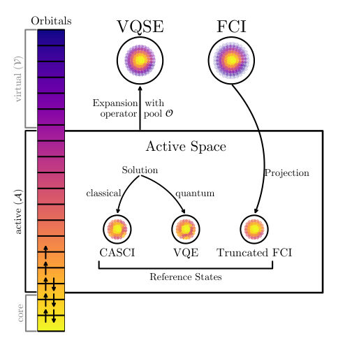
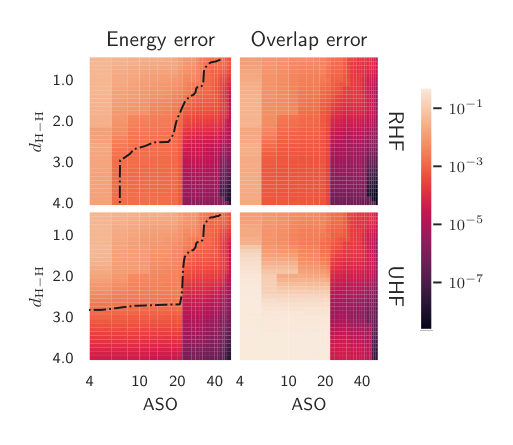
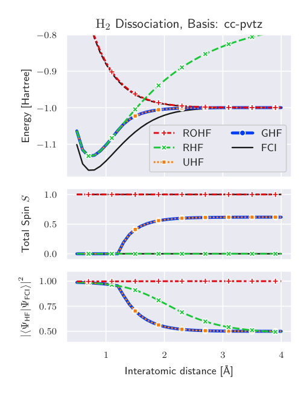
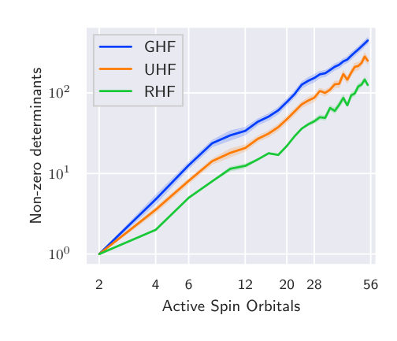
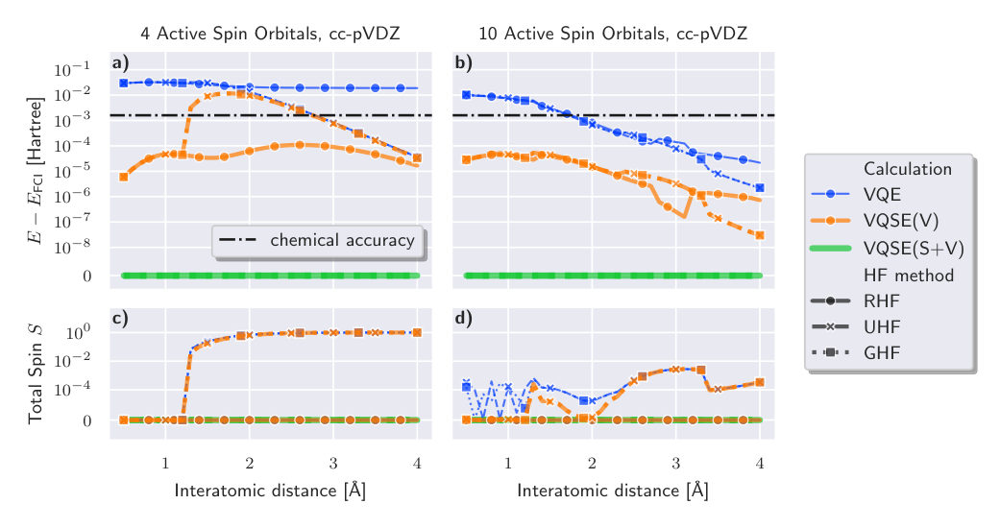
Summary. This paper analyzes the Virtual Quantum Subspace Expansion (VQSE) method to enhance quantum chemical accuracy beyond standard VQE. It identifies that achieving high precision requires careful management of both the initial reference state quality and the expressivity of the available operators. The findings provide crucial guidelines for deploying such methods on noisy, limited-qubit hardware.
Why it may be interesting. The work directly addresses the practical implementation challenges of quantum chemistry algorithms on near-term quantum hardware by providing rigorous guidelines for optimizing resource usage and fidelity.
Main problem. The primary goal is improving the accuracy of quantum chemistry calculations, especially for energy differences along potential energy surfaces crucial for modeling chemical kinetics.
Main result. The authors demonstrate that VQSE can achieve chemical accuracy by carefully co-designing reference fidelity and operator pool expressivity, even when restricted to a small subset of operators on noisy hardware.
Method. They utilize the Virtual Quantum Subspace Expansion (VQSE), an extension of VQE, which expands the variational state using measurements involving virtual orbitals derived from various Hartree-Fock references.
Model / system. The study focuses on electronic structure problems, benchmarked by $ ext{H}_2$ dissociation. The Hamiltonian is treated in second quantization using molecular orbitals, and methods range from HF theory to FCI approximations.
Key observables. Accurate energy differences along the Potential Energy Surface (PES), overlap of the reference state with the exact Full CI wavefunction, and total spin expectation value $\langle \hat{S}^2 angle$.
Important parameters / regimes. The degree of operator truncation (e.g., retaining top 10% operators) and the choice of initial reference state (RHF, UHF, GHF).
Assumptions / limitations. Approximations include using VQE/VQSE on NISQ devices; key assumptions involve the co-dependence of reference overlap and operator expressivity.
Figures summary. Figures compare energy errors ($ ext{E}{ ext{ASCI}}$ vs $ ext{E}$) across different HF methods, showing that VQSE can maintain accuracy even with significant operator truncation (e.g., 10% operators).}
Paper structure. The paper analyzes the theoretical limitations of QSE/VQSE by identifying two co-dependent error sources: reference overlap and operator pool expressivity. It then demonstrates recovery of high-level correlation energy (MR-CISD) accuracy by adding specific excitations, culminating in noisy hardware experiments.
The Virtual Quantum Subspace Expansion (VQSE) extends the Variational Quantum Eigensolver (VQE) by leveraging additional measurements on the reference state to capture the influence of excluded virtual orbitals. This makes VQSE attractive for chemical applications where accurate energy differences along potential energy surfaces are crucial for modeling reaction rates and kinetics. In this work, we analyze VQSE performance on H$_2$ dissociation including references that use Hartree--Fock molecular orbitals with broken spin symmetry. We identify two mechanisms which affect accuracy: overlap of the reference state with the exact full configuration interaction (FCI) wavefunction and operator pool expressivity. We show these mechanisms are strongly co-dependent. When operators are restricted to act only from the active to the virtual space, results become highly sensitive to the reference, and enlarging the active space does not guarantee improved accuracy. In this case, prioritizing reference overlap over energy minimization is therefore essential. Adding single excitations and number operators within the active space recovers the accuracy of MR-CISD (multi-reference configuration interaction singles and doubles) regardless of the reference. In our noisy hardware experiments, we achieve chemical accuracy by adding additional operators and using strict regularization. These findings motivate careful co-design of reference fidelity, pool expressivity, and hardware constraints for practical VQSE deployment.
Authors: Jindi Wu, Qun Li
Type: theory · Category: disordered systems and neural networks · PDF: https://arxiv.org/pdf/2608.14995v1
Analysis basis: full PDF text, analyzed in chunks
Topic relevance: quantum measurements 1/5
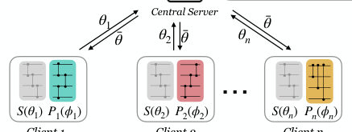
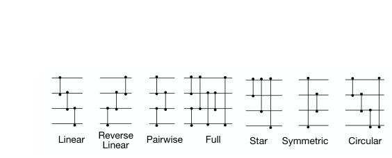
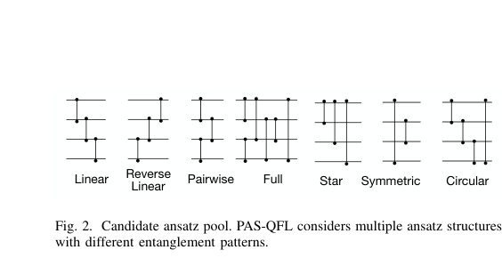
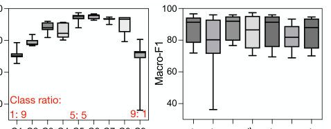
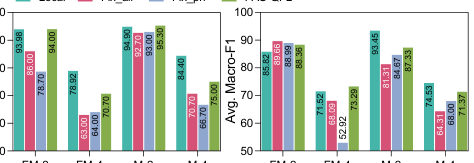
Summary. This paper introduces PAS-QFL, a novel framework for Quantum Federated Learning that addresses performance degradation caused by heterogeneous client data. It achieves this by structurally personalizing each client's QNN ansatz into shared and private components. The results demonstrate that allowing structural adaptation significantly boosts performance compared to using fixed circuit architectures.
Why it may be interesting. While focused on ML, the underlying concept of adapting complex quantum circuits (ansatzes) based on local data statistics mirrors challenges in modeling open quantum systems where system-specific coupling or environmental interactions require tailored Hamiltonians or effective models.
Main problem. Existing Quantum Federated Learning (QFL) methods fail under client data heterogeneity because they assume a fixed ansatz structure, leading to unstable and unfair performance.
Main result. The proposed PAS-QFL framework significantly improves average Macro-F1 scores over fixed-ansatz baselines by personalizing the structure of the private quantum ansatz for each client.
Method. PAS-QFL decomposes the QNN into a globally shared ansatz and a client-specific private ansatz, selecting both structures using stability-aware criteria based on local profiling.
Model / system. The model involves Quantum Neural Networks (QNNs) realized via Variational Quantum Circuits (VQCs) trained in a federated learning setting across multiple quantum clients.
Key observables. Macro-F1 score, used as the primary metric to assess performance under class imbalance and to profile ansatz suitability.
Important parameters / regimes. The stability weighting factor ($\lambda$) used when selecting the shared ansatz structure; client data heterogeneity (non-IID).
Assumptions / limitations. The method assumes that structural personalization of the private ansatz, while maintaining a common shared component for aggregation, is feasible and beneficial.
Figures summary. Figures illustrate the PAS-QFL decomposition, show profiling results confirming client-dependent suitability (Fig. 3a), and compare performance against fixed baselines across various settings (Figs. 4 & 5).
Paper structure. The paper first identifies the failure mode of fixed-ansatz QFL under heterogeneity. It then proposes PAS-QFL, detailing the decomposition into shared/private components. The methodology involves local profiling to select optimal structures for both parts, followed by federated training where only shared parameters are aggregated.
Quantum federated learning (QFL) lets multiple quantum clients collaboratively train quantum neural networks (QNNs) without sharing private local data. However, existing QFL methods commonly assume that all clients use the same ansatz, overlooking how heterogeneous client data affects ansatz suitability. Under class-imbalanced non-IID data, different clients may favor different ansatz structures, so a fixed ansatz can lead to unstable and unfair performance across clients. In this paper, we propose PAS-QFL, a Personalized Ansatz Selection framework for QFL under client data heterogeneity. Rather than treating the ansatz as a monolithic structure, PAS-QFL decomposes each client QNN into a globally shared ansatz and a client-specific private ansatz, and personalizes the structure of the private ansatz rather than only its parameters. The shared ansatz is placed first and selected by a stability-aware cross-client criterion so that its parameters can be reliably aggregated, while the private ansatz serves as a personalized decision head, selected per client by local Macro-F1 to adapt the shared representation to its local data. During training, each client updates both its shared and private parameters locally but uploads only the shared parameters, so federated aggregation stays well-defined while each client keeps its own private structure. PAS-QFL uses Macro-F1 as the primary selection metric to avoid misleading accuracy under class imbalance. Experiments on heterogeneous QFL tasks show that PAS-QFL improves average Macro-F1 over the existing fixed-ansatz QFL baselines, demonstrating the value of personalizing the ansatz structure for practical QFL.
Authors: Alex May, Philip Verduyn Lunel
Type: theory · Category: quantum information and computing · PDF: https://arxiv.org/pdf/2608.16495v1
Analysis basis: full PDF text, analyzed in chunks
Topic relevance: quantum measurements 1/5
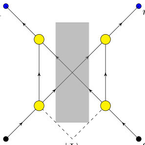
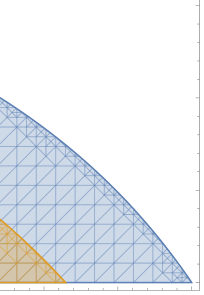
Summary. This paper develops new, analytically derived lower bounds on the quantum gate complexity required by an eavesdropper attacking the f-BB84 Quantum Position-Verification scheme. By analyzing the protocol's security under realistic conditions like transmission loss and state imperfections, the authors establish precise parameter regimes where the scheme remains secure against powerful attackers.
Why it may be interesting. This work provides rigorous, analytical cryptographic security proofs for quantum communication protocols that are highly relevant to experimental quantum information science. The focus on resource bounding (quantum gates) rather than just entanglement is a key theoretical advancement.
Main problem. The paper aims to establish new, rigorous lower bounds on the quantum gates required by an attacker attempting to break the f-BB84 Quantum Position-Verification (QPV) cryptographic scheme.
Main result. They prove that for the f-BB84 QPV scheme, an attack requires nearly linear quantum gates ($ ilde{\Omega}(n)$) unless the loss probability ($L$) and error rate ($\epsilon$) fall within a specific analytically determined security region. This establishes security under bounded gate assumptions.
Method. The analysis employs techniques from quantum information theory, specifically deriving bounds by relating the QPV protocol to lossy Monogamy-of-Entanglement (MoE) games and Simultaneous Message Passing (SMP) communication complexity.
Model / system. The study focuses on the f-BB84 Quantum Position-Verification scheme, which involves two parties establishing a function $f(x, y)$ based on inputs at different spacetime locations. The security analysis is generalized to account for realistic imperfections like transmission loss and state preparation errors.
Key observables. The primary observables are the quantum gate complexity required by an attacker, alongside parameters quantifying protocol performance: $L$ (loss probability), $\epsilon$ (error rate), and $\eta$ (input state fidelity).
Important parameters / regimes. Key parameters include the loss probability ($L$), the error tolerance ($\epsilon$), and the input state imperfection measure ($\eta$). The security region is defined by complex inequalities involving these variables.
Assumptions / limitations. The analysis assumes a specific gate set size (initially 4 acting on $\le 2$ qubits) but extends to bounding descriptive complexity. A key assumption addressed is modeling imperfect states via the trace distance ($\eta$).
Figures summary. Figure 1 illustrates the general setup of QPV in 1+1 dimensions. Figure 2 maps out the critical parameter region ($L$ vs. $\epsilon$) that dictates whether an attack requires linear or constant quantum gates.
Paper structure. The paper builds by first defining the security challenge (QPV under loss), then developing a mathematical tool—the tight analytic tradeoff for a lossy BB84 MoE game—and finally applying this tool to derive explicit, improved lower bounds on gate complexity compared to previous numerical results.
Quantum position-verification is a cryptographic task wherein a verifier attempts to establish the location in space of a prover. Recent experiments have implemented a well-studied class of position-verification schemes, known as the $f$-BB84 scenario, but their security under realistic loss and imperfect state preparation remains incompletely understood. We give a new lower bound on any attack on this scheme, in particular proving nearly-linear quantum gate lower bounds on the attacker, even when allowing the attacker to declare a transmission loss of up to $50\%$, allowing for the challenges prepared by the referee to be imperfect, and allowing the quantum messages used in the protocol to be arbitrarily slow. Our results are applicable to recent and upcoming experimental implementations of $f$-BB84, and in particular establish their security under a bounded quantum gate assumption on the attacker. The key ingredient is a tight analytic tradeoff for a lossy BB84 monogamy-of-entanglement game, valid without requiring the attackers' outputs to agree, which replaces observations previously made numerically.
Authors: P. O. Amadi, Collins O. Edet, A. R. P. Moreirae, P. Kalasuwana, N. Ali, R. Endut, S. A. Aljunid
Type: theory · Category: other · PDF: https://arxiv.org/pdf/2608.15413v1
Analysis basis: full PDF text, analyzed in chunks
Topic relevance: quantum measurements 1/5
Summary. This paper analyzes the $q$-deformed Deng-Fan Potential model to study how parameter deformation affects quantum states in molecular systems. By applying advanced information measures like Shannon and Fisher entropy, the authors show that changing the deformation parameter causes a controlled redistribution of quantum information between position and momentum spaces. This establishes a quantitative link between spatial confinement and informational uncertainty.
Why it may be interesting. This work is highly relevant as it bridges molecular physics (potential modeling) with fundamental concepts from quantum information theory. The explicit quantification of information trade-offs provides a deeper physical insight into confinement effects than spectral analysis alone.
Main problem. The study investigates how introducing a deformation parameter ($q$) into the Deng-Fan potential modifies the quantum mechanical energy spectrum and, critically, redistributes the inherent quantum information content of the system.
Main result. Stronger deformation (smaller $q$) enhances spatial localization while simultaneously increasing the entropic excess above the minimum uncertainty bound, demonstrating a complex trade-off in quantum information flow.
Method. The authors solve the time-independent Schrödinger equation exactly using hypergeometric functions and analyze the resulting wavefunctions using advanced information-theoretic measures like Shannon entropy and Fisher information.
Model / system. The system is modeled by the $q$-deformed Deng-Fan Potential ($qDFP$), a modification of an empirical potential used in molecular physics to describe diatomic interactions. The Hamiltonian is solved analytically, yielding closed-form solutions for eigenvalues and wavefunctions.
Key observables. Energy eigenvalues ($E_{n,q}$), Shannon entropy ($S_x, S_p$), Fisher information ($I_x, I_p$), and the entropic excess above the BBM bound.
Important parameters / regimes. The deformation parameter $q \in (0, 1]$, the potential depth $D_e$, and the equilibrium bond length $x_e$.
Assumptions / limitations. The analysis assumes that the system remains physically admissible for $q<1$ and relies on the mathematical framework connecting quantum mechanics to information theory.
Figures summary. Figures illustrate the potential shape change with $q$, show ground state localization sharpening, demonstrate excited state probability density asymmetry, and visualize the concentration shifts of entropic densities in position space.
Paper structure. The paper first introduces the $qDFP$ model and solves the Schrödinger equation exactly. It then analyzes the spectral consequences of varying $q$. Finally, it delves into information theory, applying entropy measures to quantify how the deformation reshapes quantum state structure beyond simple energy analysis.
We introduce a $q$-deformed Deng-Fan potential ($q$DFP) model that enables controlled modulation of short-range repulsion and long-range attraction while preserving the equilibrium configuration. The model is solved exactly within the framework of the time-independent Schrödinger equation, yielding closed-form expressions for the energy eigenvalues and wave functions in terms of hypergeometric functions. We show that the deformation parameter $q$ induces non-uniform spectral shifts and a redistribution of bound states. In particular, for $q<1$, the system exhibits spectral compression and enhanced spatial localization. In addition, we investigate the system from an information-theoretic perspective using Shannon entropy, Fisher information, and Fisher--Shannon complexity measures in both position and momentum spaces. The results reveal that the deformation parameter governs the redistribution of quantum information, establishing a direct connection between spatial confinement and momentum delocalization in accordance with the Białynicki-Birula and Mycielski entropic uncertainty principle. Stronger deformation pushes the quantum state further from the minimum-uncertainty configuration, increasing the entropic excess above the BBM bound and reducing the information content about complementary observables, even as position-space localization sharpens. The analysis of entropic and Fisher information densities further shows how the deformation reshapes both the local information content and the structural complexity of the quantum states. We show that in the limit $q\to 1$, the $q$DFP model is reduced to the standard Deng-Fan potential.
Authors: Muhammad Faryad
Type: theory · Category: quantum information and computing · PDF: https://arxiv.org/pdf/2608.15718v1
Analysis basis: full PDF text, analyzed in chunks
Topic relevance: quantum measurements 1/5


Summary. This paper rigorously benchmarks quantum kernel k-means against classical clustering for fraud detection using real transaction data. The authors conclude that no robust quantum advantage exists, finding that performance differences are negligible and often attributable to experimental controls like search budgets. They recommend reframing the problem as anomaly scoring rather than standard clustering.
Why it may be interesting. While not directly about AMO physics, the rigorous benchmarking methodology for assessing quantum advantage in machine learning tasks (like kernel methods) provides valuable lessons on how to design controlled experiments that distinguish true physical speedups from mere algorithmic artifacts or statistical noise.
Main problem. The paper benchmarks quantum kernel k-means against classical clustering for credit-card fraud detection to determine if a robust quantum advantage exists.
Main result. No robust quantum advantage was found; observed differences were small, and any apparent gains were shown to be artifacts of the search budget or hyperparameter tuning rather than inherent quantum superiority.
Method. The authors compared performance using Adjusted Rand Index (ARI) across varying qubit counts ($n=2, 4, 8, 12$) by implementing kernel estimation via compute-uncompute tests on real transaction data.
Model / system. The model uses quantum feature maps $U(x)$ to induce a fidelity kernel $K(x,y) = \langle\psi_y|\psi_x angle$ for clustering. The comparison is made against classical k-means using the same real transaction data.
Key observables. Adjusted Rand Index (ARI), Area Under the ROC Curve (AUROC), and kernel concentration metrics.
Important parameters / regimes. Number of qubits ($n$), search budget size, class imbalance ratio (e.g., 0.173% fraud rate).
Assumptions / limitations. The comparison protocol rigorously controls for selection bias by using separate development and held-out resamples; the study assumes noiseless quantum circuits.
Figures summary. Figures show performance degradation with increasing qubits due to kernel concentration, demonstrate that bandwidth choice is more critical than feature map family, and illustrate the failure of clustering vs. the stability of anomaly scoring under severe class imbalance.
Paper structure. The paper establishes a rigorous benchmarking protocol comparing quantum k-means to classical methods on real data. It systematically tests varying qubit sizes and circuit configurations, ultimately arguing that reframing the task as anomaly detection is necessary, but still finding no robust quantum advantage over tuned classical approaches.
We benchmarked quantum kernel $k$-means against classical clustering for credit-card fraud detection on real transaction data, at up to \MaxQubits{} qubits, under a protocol with separated selection and reporting data and matched search budgets. We find no robust quantum advantage: the sign of the difference depends on register size, all effect sizes are below $0.013$ ARI, and the single significant advantage we observe is fully explained by the number of configurations searched. We further show that ordinary hyperparameter choices move performance by considerably more than the quantum kernel does, that additional qubits degrade rather than improve performance through kernel concentration, and that the clustering framing itself fails at realistic class imbalance though kernel-based anomaly scoring does not. We regard the methodological contribution as the more durable one. The search-budget ablation in particular is inexpensive and, in our case, decisive: it converted a statistically significant advantage into a procedural artefact. We would encourage its routine use.
Authors: Joaquín Molina, Herbert Díaz-Moraga, Dardo Goyeneche, Diego Tancara
Type: theory · Category: quantum information and computing · PDF: https://arxiv.org/pdf/2608.14981v1
Analysis basis: full PDF text, analyzed in chunks
Topic relevance: quantum measurements 1/5
Summary. This work presents Qudit-ADAPT, an advanced variational algorithm designed for qudit systems to solve optimization problems. By integrating counterdiabatic driving into the adaptive ansatz construction, it overcomes limitations like barren plateaus and demonstrates superior performance in terms of native gate count compared to standard methods like QAOA.
Why it may be interesting. The explicit focus on qudits and the incorporation of concepts from adiabatic quantum computing (counterdiabatic driving) to stabilize VQAs makes this highly relevant for researchers exploring hardware-efficient algorithms beyond qubits.
Main problem. The paper addresses inherent challenges in variational quantum algorithms (VQA) when applied to qudits, specifically barren plateaus and designing efficient ansatz circuits.
Main result. The proposed Qudit-ADAPT algorithm, enhanced with counterdiabatic driving, achieves higher accuracy and lower native gate counts compared to fixed ansatz methods for solving optimization problems like Max 3-Cut.
Method. It adapts the ADAPT-VQE framework by constructing an operator pool derived from the adiabatic gauge potential (AGP) of a counterdiabatic Hamiltonian. This iterative process selects operators based on maximizing the energy gradient.
Model / system. The system utilizes qudits ($d>2$) to encode classical optimization problems involving ternary variables ($\{-1, 0, 1\}$). The problem is mapped onto minimizing the expectation value of a cost Hamiltonian $H_C$.
Key observables. Accuracy (relative error $\epsilon_{ ext{rel}}$), total native gate count (compared to QAOA), and convergence rate.
Important parameters / regimes. The qudit dimension ($d$), the target relative error ($\le 10^{-3}$), and the structure of the graph instance (e.g., G1, K6).
Assumptions / limitations. The use of angular-momentum operators is sufficient for ternary variables; the comparison between Qudit-ADAPT and QAOA circuit costs is made at a matched variational parameter count.
Figures summary. Figures compare operator pool sizes (Angular momentum vs. Gell-Mann basis) and show that Qudit-ADAPT requires significantly fewer native gates than QAOA for achieving comparable precision on benchmark graphs.
Paper structure. The paper first introduces the qudit framework and the need to overcome VQA limitations. It then details the integration of counterdiabatic driving into ADAPT-VQE, deriving the operator pool from the AGP. Finally, it compares the resulting circuit costs against QAOA for various graph instances.
Variational quantum algorithms based on qudits have attracted significant attention in recent years. However, as in their qubit-based counterparts, challenges such as barren plateaus and the design of efficient ansatz remain major obstacles. In this work, we propose to address these issues through a qudit implementation of the ADAPT-VQE algorithm, which constructs the ansatz iteratively. Specifically, we introduce an operator pool inspired by adiabatic evolution enhanced with counterdiabatic driving for ansatz construction and employ it to solve Max 3-Cut. We show that the warm-start strategy inherent to ADAPT-VQE, together with an ansatz construction based on counterdiabatic operators, achieves higher accuracy and lower native gates implementation than approaches on fixed ansatz. Furthermore, we show that, in qudit-based quantum computing, ADAPT-VQE with a counterdiabatic operator pool can navigate rough optimization landscapes with local traps through the burrowing mechanism, suggesting robustness against barren plateau effects and providing a scalable framework for variational quantum algorithms with qudits.
Authors: Sumin Lim
Type: theory · Category: strongly correlated electrons · PDF: https://arxiv.org/pdf/2608.15577v1
Analysis basis: full PDF text, analyzed in chunks
Topic relevance: quantum measurements 1/5
Summary. This paper introduces a resource-efficient qutrit encoding for simulating quantum chemistry problems. By mapping orbital occupation states to three levels ($|0 angle, |1 angle, |2 angle$), the authors develop a VQE framework that significantly reduces required quantum resources compared to standard qubit approaches. Benchmarks on $ ext{H}_2$, $ ext{LiH}$, and $ ext{H}_2 ext{O}$ confirm that this physically motivated encoding retains high electronic structure accuracy while offering superior scaling.
Why it may be interesting. This work directly addresses the challenge of mapping complex many-body Hamiltonians onto quantum hardware resources, providing a concrete blueprint for qudit-native algorithms in chemistry that surpass qubit limitations.
Main problem. Accurately simulating electronic structure calculations for molecules is computationally prohibitive due to the exponential growth of the Full Configuration Interaction (FCI) space.
Main result. A qutrit-native encoding significantly reduces quantum resource requirements compared to qubit methods, achieving high accuracy in potential energy curves for $ ext{H}_2$, $ ext{LiH}$, and $ ext{H}_2 ext{O}$ while maintaining chemical accuracy.
Method. The authors propose a variational quantum eigensolver (VQE) framework using a qutrit encoding where orbital occupation states are $|0 angle$ (empty), $|1 angle$ (singly occupied), and $|2 angle$ (doubly occupied). The ansatz is built from number-conserving pair-transfer and broken-pair generators.
Model / system. The study applies the method to quantum chemistry simulations of small molecules ($ ext{H}_2$, $ ext{LiH}$, $ ext{H}_2 ext{O}$) using active space approximations derived from correlated electronic structure theory. The Hamiltonian is projected onto this qutrit occupation basis.
Key observables. Potential-energy curves, absolute energy errors relative to FCI (in mHa), and the scaling of ansatz generator count ($O(M^2)$ vs $O(M^4)$).
Important parameters / regimes. The number of spatial orbitals ($M$), the chemical accuracy threshold ($\sim 1 ext{ kcal mol}^{-1}$ or few mHa), and the specific active space size used for truncation.
Assumptions / limitations. The primary assumptions involve truncating the full electronic structure problem into a manageable qutrit-based active space, requiring careful selection of pairing rules (e.g., $(pq)(rs)$ for $ ext{H}_2 ext{O}$) to minimize error.
Figures summary. Figures illustrate potential energy curves comparing FCI results against the proposed qutrit-VQE method for various molecules ($ ext{H}_2$, $ ext{LiH}$, $ ext{H}_2 ext{O}$), alongside plots detailing absolute energy deviations from FCI.
Paper structure. The paper introduces the physical motivation (FCI complexity) and proposes the qutrit encoding. It details the VQE ansatz construction using pair-transfer and broken-pair blocks, validates the method on $ ext{H}_2$, benchmarks it on $ ext{LiH}$, and finally demonstrates resource efficiency and accuracy on $ ext{H}_2 ext{O}$ by comparing different active space restrictions.
Additional levels in a qudit can serve as more than extra computational capacity and can represent physically relevant correlations when the algorithmic design reflects the underlying physics of the problem. We demonstrate this principle for quantum chemistry simulation using a qutrit-native spatial-orbital encoding, where $|0\rangle$, $|1\rangle$, and $|2\rangle$ denote orbital occupation states. We establish a qutrit simulation framework that combines number-conserving pair-transfer and broken-pair generators with a projected-Hamiltonian energy estimator constructed from qutrit populations and coherences. Benchmarks for H$_2$, LiH, and H$_2$O show that the encoding reproduces the relevant potential-energy curves, while retaining a compact quantum resource structure. Direct comparison with the pair-only restriction confirms that the third level reduces errors by tens of mHa in LiH and by more than 100 mHa in H$_2$O. Despite a partial spin-coupling truncation in the compact H$_2$O encoding, the resulting energy curve deviates from FCI by only a few mHa over the tested range. Compared with a conventional qubit-based UCCSD approach, the qutrit scheme requires half as many quantum units and reduces the scaling of the parameterized ansatz generator count from $O(M^4)$ to $O(M^2)$, where $M$ is the number of spatial orbitals. This work elucidates how a physically motivated qutrit encoding can reduce quantum-resource requirements while retaining controlled electronic-structure accuracy, thereby providing a concrete starting point for broader qudit-native quantum algorithm design.
Authors: Durgesh Pandey, Ankit Kumar Das, P. Arumugam
Type: theory · Category: quantum information and computing · PDF: https://arxiv.org/pdf/2608.16371v1
Analysis basis: full PDF text, analyzed in chunks
Topic relevance: quantum measurements 1/5
Summary. This paper addresses the computational bottleneck in nuclear shell model calculations caused by exponentially large Hilbert spaces. It introduces Sample-based Quantum Diagonalization (SQD), a novel hybrid method where a noisy quantum computer samples basis states, which are then used for exact diagonalization classically. SQD is shown to be scalable and noise-tolerant, offering a path to solve previously intractable, large-scale nuclear structure problems.
Why it may be interesting. It demonstrates a direct, practical application of NISQ hardware to solve a notoriously difficult many-body problem (nuclear structure) by proposing a noise-resilient hybrid quantum algorithm that bypasses the limitations of both classical memory and deep quantum circuits.
Main problem. The exponential scaling of exact diagonalization for nuclear shell model calculations creates severe memory bottlenecks on classical supercomputers.
Main result. The proposed Sample-based Quantum Diagonalization (SQD) framework can outperform conventional supercomputers in memory scaling and total execution time, enabling large-scale shell model calculations despite hardware noise.
Method. SQD is a hybrid quantum algorithm where the noisy quantum computer acts solely as a configuration sampler, generating basis states that are then used for classical exact diagonalization on a reduced subspace.
Model / system. The study focuses on nuclear many-body systems, using ${}^{32} ext{Mg}$ and $^{38} ext{Ar}$ as benchmarks. The Hamiltonian is formulated in second quantization and mapped to the 'SparsePauli' form for quantum circuits.
Key observables. Ground and low-lying excited energy levels ($E_i$) of the nuclear system, measured in MeV.
Important parameters / regimes. The Hilbert space dimension scales exponentially ($O(2^N)$); calculations are tested up to 48 active spin-orbitals ($N$).
Assumptions / limitations. SQD is assumed to be a pragmatic approach tolerant to noise, unlike deep variational circuits (VQE), by decoupling state optimization from the QPU.
Figures summary. Figure 1 illustrates computational workload shifting towards quantum computation; Figure 3 compares time-to-solution for ${}^{32} ext{Mg}$ across methods as spin-orbitals increase, showing SQD's advantage over RAM-limited classical solvers.
Paper structure. The paper introduces the problem of exponential scaling in nuclear shell models. It details three approaches—Exact Diagonalization (classical limit), VQE (variational quantum), and SQD (proposed hybrid method). Results compare these methods on ${}^{38} ext{Ar}$ and ${}^{32} ext{Mg}$, demonstrating SQD's scalability advantage.
The exact diagonalization of the nuclear shell model scales exponentially, leading to severe memory bottlenecks in classical high-performance computing (HPC). While hybrid quantum algorithms like the Variational Quantum Eigensolver (VQE) aim to overcome these limits, their deep quantum circuits and iterative feedback loops are susceptible to substantial noise inherent in the current Noisy Intermediate-Scale Quantum (NISQ) hardware. This noise renders several algorithms, such as the VQE, impractical for large-scale calculations despite sophisticated noise-mitigation techniques. As a pragmatic approach tolerant to these issues, we apply the Sample-based Quantum Diagonalization (SQD) framework to nuclear shell models for the first time. Using $^{38}\text{Ar}$ as a benchmark to confirm the numerical accuracy, we extend SQD to $^{32}\text{Mg}$, solving a nuclear shell-model Hamiltonian whose underlying Hilbert space cannot be directly diagonalized using conventional classical methods in a given HPC system. We present a systematic comparison of SQD with standard variational quantum schemes and exact classical solvers. By leveraging NISQ hardware connected via the cloud to classical HPC clusters, the SQD-based scheme could outperform conventional supercomputers in memory scaling and total execution time, enabling more rigorous large-scale shell model calculations.
Authors: Yehonatan Avidan, Daniel D. Lee, Haim Sompolinsky
Type: theory · Category: disordered systems and neural networks · PDF: https://arxiv.org/pdf/2608.15632v1
Analysis basis: full PDF text, analyzed in chunks
Topic relevance: quantum measurements 1/5
Summary. This work proposes a predictive geometric theory showing that deep neural network classification relies on a sparse, structured relationship between class representations and their centroids. By deriving an analytical mean-field theory based on these correlations, the authors successfully predict classification accuracy across diverse AI models (vision, language) with high fidelity.
Why it may be interesting. While focused on AI, the concept of emergent structure in high-dimensional feature spaces—where local correlations dictate global performance—echoes principles seen in glassy systems or complex energy landscapes studied in statistical mechanics.
Main problem. To develop a quantitative geometric theory linking the structure of neural representations to their performance on downstream classification tasks across multiple modalities.
Main result. Classification accuracy is governed by a sparse, centroid-aligned structure where within-class variability correlates strongly with true and rival class centroids. A derived mean-field theory accurately predicts this accuracy across diverse architectures.
Method. The authors derive an analytical mean-field theory based on geometric quantities like class radii and correlations between class centroids and within-class variability, validating it through causal testing (e.g., $\delta$-rotations).
Model / system. The study analyzes high-dimensional activation vectors ($\mathbf{x}$) from state-of-the-art Deep Neural Networks (DNNs) trained on vision, audio, and language tasks. Classification is modeled using prototype classification based on class centroids.
Key observables. Classification Accuracy ($ ext{Acc}$), per-class Pearson correlation ($r$), Mean Squared Error (MSE), within-class variability, and centroid correlations.
Important parameters / regimes. Model scale, number of classes ($P$), dimensionality ($N$), and the global rescaling factor ($\lambda$).
Assumptions / limitations. The theory relies on prototype classification as a reliable proxy for linear readout heads, and it assumes that class variability is structured around centroids.
Figures summary. Figures demonstrate causal testing where breaking residual-centroid correlations restores perfect accuracy. Tables summarize the high correlation ($r \approx 0.95$) between empirical and theoretically predicted accuracies across various backbones.
Paper structure. The paper progresses from establishing the geometric structure (Chunk 1), to contrasting this with simple isotropic models using controlled manipulations like variability inflation (Chunk 2), and finally applying a refined, predictive mean-field theory across dozens of real-world models in multiple modalities (Chunks 3 & 4).
Neural representations have become a central tool for studying the internal mechanisms of modern AI models, yet their complex high-dimensional structure makes them difficult to interpret. We show that classification tasks give rise to a universal representational geometry, shared across state-of-the-art models in vision, audio, and language processing. The key structure is that within-class variability is not random in representation space. Instead, its classifier-relevant component has strong and structured correlations with the class's own centroid and with the centroids of its competing classes. Building on this observation, we derive an analytical mean-field theory governed mainly by the variability along true-class and rival-class centroid coordinates, together with a global renormalization of the class radius that compensates for the non-Gaussian statistics of real representations. The theory accurately predicts classification accuracy across architectures and modalities. The relevant geometric quantities improve systematically with model scale, mirroring the observed gains in accuracy. A striking feature of the theory is its sparsity: accurate prediction requires only a small set of centroid coordinates associated with the true class and its strongest rivals - connecting our framework to sparse-feature extraction approaches such as sparse autoencoders. Together, these results provide a parsimonious predictive theory of neural representations and suggest that classification in deep networks is governed by a sparse, centroid-aligned structure embedded within the full high-dimensional representation space.
Authors: Koki Shimura, Shuntaro Sumita, Yusuke Kato
Type: theory · Category: strongly correlated electrons · PDF: https://arxiv.org/pdf/2608.16350v1
Analysis basis: full PDF text, analyzed in chunks
Topic relevance: Keldysh / 2PI / non-Gaussian methods 1/5
Summary. This work theoretically examines the magnetic excitations in the heavy-fermion superconductor UTe2 using a periodic Anderson model within the BCS-RPA formalism. It finds that the spin resonance peak, a key signature of superconductivity, appears exclusively when the superconducting order parameter belongs to the $B_{2u}$ irreducible representation. This result highlights how Fermi surface topology and pairing symmetry dictate observable magnetic responses in correlated superconductors.
Why it may be interesting. The theoretical framework linking magnetic excitations (spin resonance) directly to the superconducting order parameter symmetry via a sign-change criterion is highly relevant for understanding unconventional pairing mechanisms in correlated electron systems.
Main problem. The study investigates the dynamical spin response (magnetic excitations) within UTe2, a heavy-fermion superconductor suspected to exhibit spin-triplet superconductivity.
Main result. A pronounced superconductivity-induced spin resonance is found only for the $B_{2u}$ order parameter in the SC state, explained by a sign change criterion across relevant Fermi surface regions connected by $\mathbf{Q}_Y$.
Method. The analysis employs the BCS-RPA formalism applied to a mixed-dimensional periodic Anderson model Hamiltonian.
Model / system. The system is UTe2, modeled using a three-orbital tight-binding framework (f, d, p orbitals) coupled via an on-site Coulomb interaction ($H_U$).
Key observables. Dynamical spin susceptibility ($\chi(\mathbf{q}, \omega)$), superconductivity-induced spin resonance peak, and the hybridization gap.
Important parameters / regimes. The analysis compares four odd-parity irreducible representations ($A_u, B_{1u}, B_{2u}, B_{3u}$) for the order parameter; $\mathbf{Q}_Y = (0, \pi, 0)$ is a critical nesting vector.
Assumptions / limitations. The formalism relies on approximating the spin susceptibility using BCS-RPA and assumes applicability of the sign-change criterion derived from multiband superconductivity theory.
Figures summary. Not specified in detail; notes mention Fermi surface geometry changes based on hybridization strength ($V_{fp}$) and the location of maximum static bare spin susceptibility ($ ext{Re} \chi_0$).
Paper structure. The paper first analyzes the normal state magnetic response, showing gap opening at $\mathbf{Q}_Y$. It then transitions to the SC state analysis, comparing different pairing symmetries ($A_u$ through $B_{3u}$) to pinpoint the specific symmetry ($B_{2u}$) responsible for the resonance.
We study the dynamical spin response of UTe$_2$ by using a mixed-dimensional periodic Anderson model. Within the BCS-RPA formalism, we examine how the $f$-orbital character of the quasiparticles affects magnetic excitations in both the normal and superconducting (SC) states. In the normal state, finite mixing between localized $f$ electrons and conduction electrons produces a hybridization gap and enhances the spin response at $\mathbf{Q}_{\mathrm{Y}} = (0,π,0)$, indicating that the magnetic excitation originates from particle--hole scattering across the hybridization gap. In the SC state, we compare four odd-parity irreducible representations, $A_u$, $B_{1u}$, $B_{2u}$, and $B_{3u}$, for the spin-triplet order parameter. We find that, for the component of the spin susceptibility parallel to the $\mathbf{d}$ vector, a pronounced superconductivity-induced spin resonance appears at $\mathbf{Q}_{\mathrm{Y}}$ only in the $B_{2u}$ state. This behavior arises because the $B_{2u}$ order parameter remains finite and changes its sign between the relevant $f$-electron-dominated Fermi-surface regions connected by $\mathbf{Q}_\mathrm{Y}$ near $k_z=π$. The sign-change criterion is applicable to multiband superconductors in three-dimensional heavy-fermion systems, in the presence of (i) low-dimensional portions of the Fermi surface connected by a nesting vector, (ii) the dominance of the $f$-electron character, and (iii) the finite amplitude of SC gap on the portions.
Authors: Can Polat, Mustafa Kurban, Erchin Serpedin, Hasan Kurban
Type: theory · Category: numerical methods · PDF: https://arxiv.org/pdf/2608.14875v1
Analysis basis: full PDF text, analyzed in chunks
Topic relevance: Keldysh / 2PI / non-Gaussian methods 1/5
Summary. This work investigates whether advanced ML corrections to electronic structure can be reliably incorporated into computationally cheap DFTB models. The study finds that while some physical signatures survive, the crucial band gap correction fails due to fundamental structural mismatches between the parent theory and the compressed Hamiltonian. This highlights critical limitations in parameterizing complex quantum physics into simplified tight-binding forms.
Why it may be interesting. While focused on solid-state DFT methods, the rigorous quantitative comparison between high-level quantum chemistry (ML functionals) and simplified effective Hamiltonians (DFTB) provides valuable insights into the limitations of model reduction techniques in condensed matter physics.
Main problem. The core problem is determining if improvements derived from advanced machine-learned (ML) exchange-correlation (XC) functionals can be successfully transferred or inherited into the computationally efficient framework of Density-Functional Tight Binding (DFTB).
Main result. The transfer fails for band gaps in covalent semiconductors, showing a coherent 'anti-transfer' effect; however, signatures related to occupied manifold enhancements and repulsive potentials are found to survive.
Method. The study employs a 'functional-agnostic parameterization bridge,' using the diagnostic tool of the 'transfer ratio' to quantify how much of a parent DFT change survives compression into the multiplicative potential structure of DFTB.
Model / system. The research focuses on electronic structure prediction across various materials, including covalent semiconductors (e.g., Diamond, SiC) and ionic solids ($ ext{MgO}$). The model compares results from high-level ML XC functionals against the semiempirical constraints of DFTB.
Key observables. Band gaps ($\Delta E_g$), transfer ratio (TR), occupied manifold signatures, and channel asymmetry $|v_s - v_p|$.
Important parameters / regimes. The analysis is sensitive to functional type (ML vs. PBE) and structural class (covalent vs. ionic). The failure mechanism is tied to the mismatch between orbital-dependent ML operators and DFTB's multiplicative potential.
Assumptions / limitations. A primary assumption tested is that better parent functionals yield better TB parameterizations, which the paper ultimately refutes for gap properties due to structural limitations in the DFTB formalism.
Figures summary. Figures illustrate the functional-agnostic pipeline and compare parent DFT results against derived DFTB results, showing where specific physical signatures (like occupied bandwidth) persist while others fail.
Paper structure. The paper systematically tests the transferability of ML XC improvements across different material classes using a defined computational bridge. It moves from general gap analysis to examining specific surviving properties and finally analyzing near-nucleus potential fits for robustness.
Machine-learned exchange-correlation functionals correct band gaps at near-semilocal cost, while density-functional tight binding reaches the $10^3$-$10^6$-atom regime; combining them assumes that a better parent yields a better parameterization, but we show it does not. Current-generation functionals are orbital-dependent generalized Kohn-Sham operators, whereas the parameterization channel is built on a multiplicative potential, preventing exact representation. Using the transfer ratio, the surviving fraction of a parent-level change, we find anti-transfer: coherently negative ratios across four covalent semiconductors move the gap in the wrong direction, consistent with a molecular proxy and an r$^2$SCAN control. The minimal-basis overgap is dominated by the on-site convention rather than basis incompleteness; correcting the on-site block removes most of it, while one $d$-polarization shell closes a further $16$-$40%$, depending on the placement of the empty $d$ level, which no free-atom eigenvalue uniquely fixes. Occupied-manifold enhancements, ionic and closed-shell repulsive potentials, and rocksalt-oxide gaps inherit, whereas elemental and III-V covalent networks inherit neither gaps nor repulsive potentials and oxide networks inherit only the latter. We screen 23 elements and release the parameter sets, showing that the transfer ratio provides a cheap pre-test before any parameterization campaign.
Papers from primary archives without highlighted authors or any topic match. Click to expand.